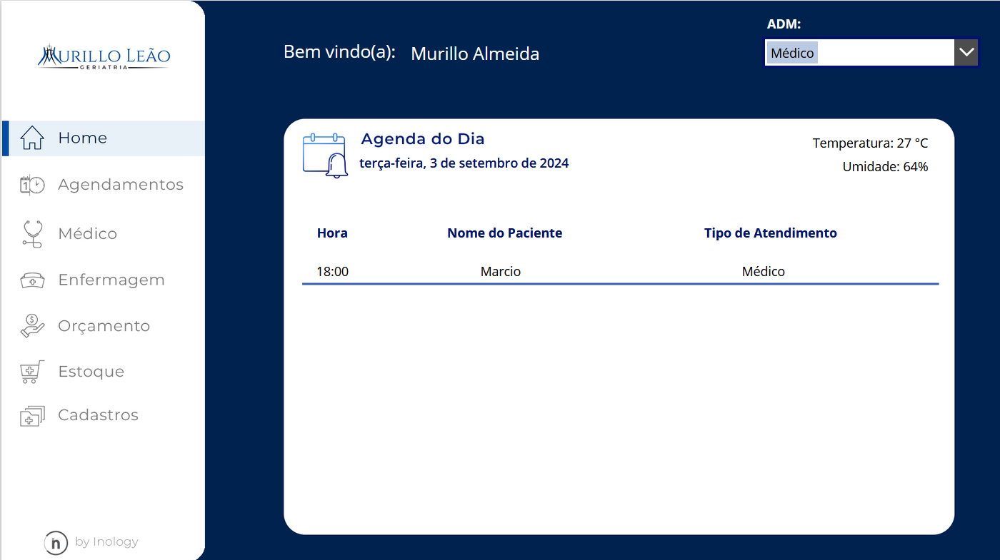
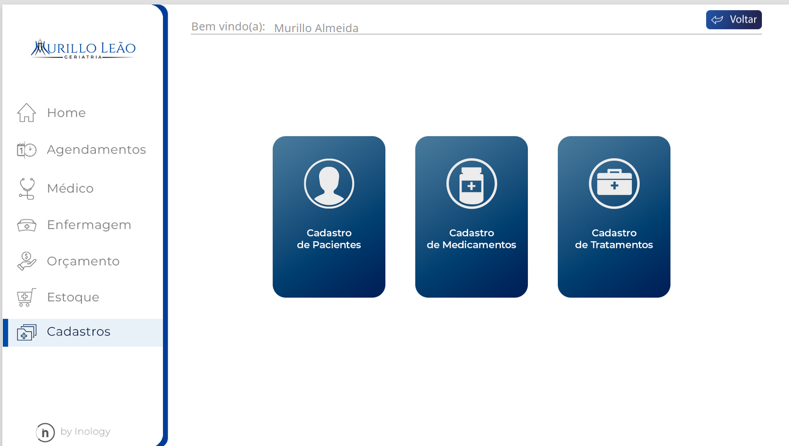
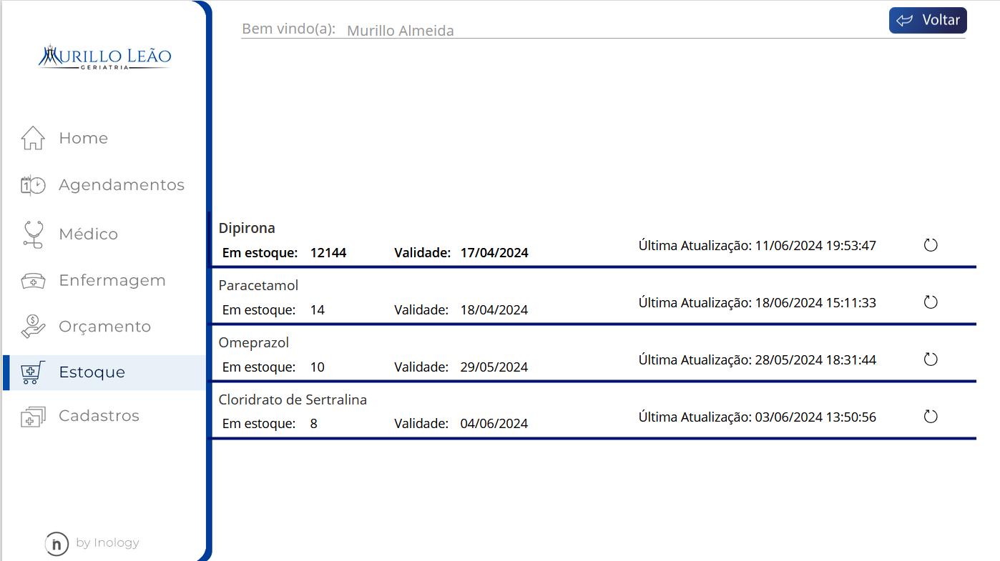
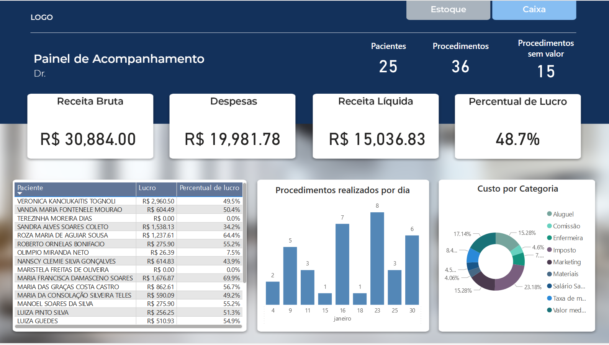
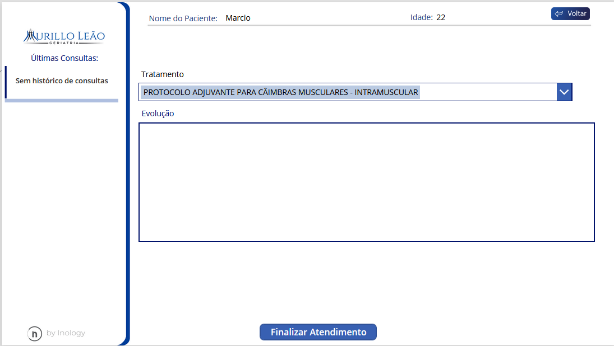

Apresentação do Sistema
A INOLOGY desenvolveu um sistema para a cliníca DR.Murillo com especialidade em geriatria, utilizando Power Apps e Microsoft Lists, que oferece funcionalidades avançadas para o controle de agenda de atendimentos e gerenciamento de estoque. O sistema permite que a clínica organize de forma eficiente os horários de consultas, otimizando o atendimento aos pacientes, enquanto facilita a gestão de produtos e insumos, garantindo maior controle e visibilidade do estoque. Com uma interface intuitiva e recursos automatizados, o sistema visa aumentar a produtividade e melhorar a organização interna da clínica.
Visão do produto
- Tela Inicial
Na tela inicial temos uma barra de navegação a esquerda que é contida em todas as tela de navegação exceto as tela de atendimento; na divisão central é mostrado a agenda do dia mostrando todos os pacientes marcados para tal, por fim no canto superior direito temos opção de ADM que tem o papel de selecionar diferentes perfis para acessar diferentes funções ao sistema. (terá acesso somente com a autorização do proprietário do sistema.) 
- Seção de cadastros
Na seção de cadastro mostra as diferentes opções de cadastro.

- Tela de cadasto de paciente
Na tela de cadastro de paciente é listado todos os paciente cadastrados podendo: cadastrar, excluir e editar
- Tela de cadasto de medicamento
Na tela de cadastro de medicamento é listado todos os medicamentos cadastrados podendo: cadastrar, excluir e editar
- Tela de cadasto de tratamento
Na tela de cadastro de tratamento é listado todos os tratamentos cadastrados podendo: cadastrar, excluir e editar.
- Seção de Estoque
Na aba de estoque temos todos os medicamentos cadastrados sendo possível fazer movitações de entrada e saída.

- Seção de Orçamento
Em Orçamento o gestor resposável pela clínica poderá visualizar um painel BI que é alimentado pelos dados das movimentações de medicamento e tratamento.

- Seção de Enfermagem
Em Enfermagem será visto a agenda do dia dos pacientes marcados com o enfermeiro e no ícone de tesoura será feito o início do atendimento do paciente.

- Seção do Médico
Em Médico será visto a agenda do dia dos pacientes marcados com o médico e no ícone do estetoscópio será feito o início do atendimento do paciente.
- Seção de Agendamento
Em agendamento o secretário terá funções de agendar e alterar o status de um paciente (que é previamente é cadastrado na tela cadastro paciente)
Impacto
Eficiência Operacional
- Automação de processos
- Gestão de estoque otimizada
Aumento do controle e Visibilidade
- Visão clara dos dados
- Redução de erros
- Vantagem comercial
Produtividade e Organização interna
- Maior produtividade
- Integração e comunicação